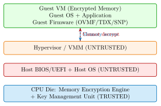
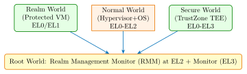

Chapter 37: Confidential Computing Hardware¶
Note: Confidential Computing isolates data in use using hardware-enforced Trusted Execution Environments at the VM or container level. Unlike process-level TEEs (Chapter 4), full-VM confidential computing protects against a malicious hypervisor, cloud operator, or firmware.
Confidential Computing (CC) is the fastest-growing area of hardware security, driven by the need to process sensitive workloads in untrusted cloud environments. The Confidential Computing Consortium (CCC), a Linux Foundation project, unifies the ecosystem across Intel TDX, AMD SEV-SNP, ARM CCA, and IBM Secure Execution.
37.1 Threat Model: The Untrusted Hypervisor¶
Traditional cloud security assumes the hypervisor (VMM) is trusted. Confidential Computing removes this assumption. The Trusted Computing Base (TCB) is reduced to:
-
The CPU die (microcode + on-chip encryption engine)
-
The guest firmware (measured and attested)
-
The guest OS and application (running inside the protected VM)
Everything outside is untrusted: the hypervisor, BIOS/UEFI host firmware, device drivers, co-tenants, and cloud operator personnel.

37.2 Intel Trust Domain Extensions (TDX)¶
Intel TDX, introduced in 4th Gen Xeon Scalable (Sapphire Rapids, 2023), creates hardware-isolated Trust Domains (TDs). The key components are:
37.2.1 TDX Architecture¶
- SEAM Module
- A special Intel-signed module that runs in
SEAMmode, managing TDs. It acts as the Trust Domain Module (TDM). The SEAM module is measured and its hash is stored in a CPU fuse. - Memory Tagging
- Each TD gets a unique private KeyID. Physical memory encrypted with the TD’s key is tagged; the CPU’s Multi-Key Total Memory Encryption (MKTME) engine handles transparent AES-XTS-128 or AES-XTS-256 encryption at the memory controller.
- TDCS/TDVPS
- TD Control Structure and TD Virtual Processor State are stored in encrypted memory. The hypervisor can read the encrypted blob but not the plaintext state.
- TDCALL/SEAMCALL
- New instructions allow the TD to call the SEAM module (for attestation, key sealing) and the VMM to manage TDs (create, destroy, page-in/out).
37.2.2 TDX Attestation¶
TDX remote attestation uses the DCAP (Data Center Attestation Primitives) flow:
-
The TD requests a TD Quote via
TDCALL[TDG.MR.REPORT] -
The Quote Service (running outside the TD) signs the report using an ECDSA-P256 key bound to the Intel Provisioning Certification Key (PCK)
-
A remote verifier checks the Quote against Intel’s PCCS (Provisioning Certification Caching Service)
-
Measurement Registers:
MRTD(TD initial state),RTMR[0-3](runtime measurements, analogous to PCRs)
#include <tdx_attest.h>
tdx_report_data_t report_data = {0};
/* Embed nonce/public key hash into report_data */
memcpy(report_data.d, nonce, 64);
tdx_report_t td_report;
tdx_get_report(&report_data, &td_report);
/* Send td_report to Quote Generation Service (QGS) */
tdx_quote_t *quote = NULL;
tdx_get_quote(&report_data, "e, "e_size);
/* Transmit quote to remote verifier */
37.2.3 TDX 1.5 Improvements (2024)¶
Intel TDX 1.5, shipping in Intel Xeon 5th Gen (Emerald Rapids) and available via firmware update on Sapphire Rapids, adds:
-
TD Partitioning: Single TD can host multiple isolated partitions
-
Migtd: TD Migration support for live migration of confidential VMs between servers without exposing secrets
-
Nested TDX: A TD can host its own hypervisor (L2 guest TDs)
-
TDX Connect: Direct Memory Access (DMA) to confidential peripherals via SPDM/TDX device attestation
37.3 AMD Secure Encrypted Virtualization – Secure Nested Paging (SEV-SNP)¶
AMD SEV-SNP (shipped in EPYC 7003 “Milan” 2021, EPYC 9004 “Genoa” 2023) is AMD’s full-VM confidential computing solution. It extends SEV-ES with memory integrity protection.
37.3.1 SEV-SNP Architecture¶
- AES-128-XEX Memory Encryption
- Each VM gets a VM Encryption Key (VEK) managed by the AMD Secure Processor (AMD-SP, formerly PSP). Physical pages are encrypted with AES-128 in XEX mode using the guest’s VEK.
- Reverse Map Table (RMP)
- A hardware-managed table that records which VM “owns” each physical page. If the hypervisor tries to map a page to a different VM, the CPU generates a
#PFfault — preventing host-to-guest data injection. - Virtual Machine Privilege Level (VMPL)
- SEV-SNP introduces 4 privilege levels (VMPL0–3) within a VM. VMPL0 (e.g., a security monitor) can enforce policies on VMPL1 (the OS) and VMPL2–3 (applications), enabling nested security boundaries without full TEE overhead.
37.3.2 SEV-SNP Attestation¶
#include <linux/sev-guest.h>
#include <sys/ioctl.h>
int fd = open("/dev/sev-guest", O_RDWR);
struct snp_report_req req = {
.msg_version = 1,
};
/* Embed 64-byte user_data (nonce / public key hash) */
memcpy(req.user_data, nonce, 64);
struct snp_report_resp resp;
struct snp_guest_request_ioctl data = {
.req_data = (__u64)&req,
.resp_data = (__u64)&resp,
};
ioctl(fd, SNP_GET_REPORT, &data);
/* resp.data contains the signed SNP attestation report */
Key fields in the SNP Attestation Report:
-
MEASUREMENT: SHA-384 of the initial guest image
-
HOST_DATA: Set by the hypervisor; VM can verify untampered
-
ID_KEY_DIGEST / AUTHOR_KEY_DIGEST: VM identity
-
Signed with VCEK (Versioned Chip Endorsement Key) derived from the AMD root key fused in silicon
37.3.3 SEV-SNP Attacks and Mitigations¶
| Attack | Mechanism | Mitigation |
|---|---|---|
| CacheWarp (2023) | AMD SEV(-ES/-SNP): exploit write-back cache to revert encrypted memory to stale state | Microcode patch AMD-SB-3005; EPYC 4th Gen unaffected |
| WeSee (2024) | #VC exception handler manipulation in SEV-SNP guests | Kernel patch; use VMPL0 security monitor |
| INCEPTION (2023) | Speculative execution RAS poisoning, AMD Zen 3/4 | Microcode + kernel IBPB barrier |
37.4 ARM Confidential Compute Architecture (CCA)¶
ARM CCA, introduced in ARMv9.2-A, creates hardware-isolated Realms managed by a new software layer called the Realm Management Monitor (RMM), running at EL2 (Root world). The architecture adds a fourth security state: Root.
37.4.1 CCA World Model¶

37.4.2 CCA Key Components¶
- Realm Management Extension (RME)
- Hardware extension providing the Root world and memory granule protection tables (GPT). GPT assigns each 4KB/2MB/1GB memory granule to a world; unauthorized access causes a granule protection fault.
- Realm Management Monitor (RMM)
- Open-source firmware layer (TF-RMM, Trusted Firmware project) managing Realm creation, destruction, and attestation.
- CCA Attestation
-
Uses the RATS (RFC 9334) framework:
-
Realm Initial Measurement (RIM): hash of Realm image at creation
-
Realm Extensible Measurements (REM[0-3]): runtime measurements
-
Signed by a hardware-rooted CPAK (Composite Platform Attestation Key)
-
Note: ARM CCA is available in Cortex-A720 and Cortex-X4 (2024) and integrated in Qualcomm Snapdragon 8 Gen 3. iOS 17 uses hardware-backed security features derived from CCA on Apple Silicon (Apple implements a proprietary variant).
37.5 IBM Secure Execution for Linux (IBM Z / LinuxONE)¶
IBM Secure Execution (IBM z15/z16, LinuxONE III/IV) isolates KVM guests using hardware memory encryption. The Ultravisor (a hardware-enforced firmware layer) manages encrypted page tables so that even a compromised hypervisor cannot access guest memory.
-
Uses Customer Communication Key (CCK) derived from a hardware Unique Card Key (UCK) fused at manufacturing
-
AES-256 XTS memory encryption, unique per-guest key
-
Secure Boot: Guest image signed with IBM’s key; host cannot boot an unsigned guest
-
Widely deployed in banking and healthcare (z16 processes 70% of global transaction value)
37.6 FPGA Implementation: Confidential Computing Accelerators¶
| Component | FPGA Platform | Resources | Notes |
|---|---|---|---|
| AES-XTS-256 MEE | Xilinx Alveo U280 | 3,200 LUTs, 4 BRAMs | 10 GB/s throughput |
| RMP Table Walker | AMD EPYC emulation (UltraScale+) | 8,500 LUTs | Reverse Map Table prototype |
| TDX SEAM Module | Intel Agilex 7 | 45,000 LUTs | Research prototype, Intel Labs 2023 |
| CCA RMM Prototype | Neoverse N2 FPGA model | 12,000 LUTs | ARM Cambridge Research |
| Attestation Quote Gen | Xilinx Artix-7 | 6,800 LUTs, 1 DSP | 200 MHz, ECDSA-P256 |
37.7 ASIC Implementation Data¶
| Product | Process | MEE Area | Throughput | TDP |
|---|---|---|---|---|
| Intel Sapphire Rapids (TDX) | Intel 7 (10nm ESF) | \(\sim\)15 mm2 | 400 GB/s | 350 W |
| AMD EPYC Genoa (SEV-SNP) | TSMC 5nm | \(\sim\)12 mm2 | 460 GB/s | 360 W |
| ARM Cortex-A720 (CCA) | TSMC 4nm | \(<\)1 mm2 | 51 GB/s | 3 W |
| IBM z16 Ultravisor | IBM 5nm | Integrated | 32 TB/s (system) | 20 kW |
| NVIDIA H100 HBM3 MEE | TSMC 4N | \(\sim\)8 mm2 | 3.35 TB/s | 700 W |
37.8 Confidential Computing Ecosystem¶
| Solution | Vendor | Description |
|---|---|---|
| TDX + DCAP | Intel | TDX-enabled Xeon; DCAP attestation library (open source) |
| SEV-SNP | AMD | EPYC Milan/Genoa; snp-guest driver in Linux 5.19+ |
| CCA / TF-RMM | ARM | Neoverse N3/V3 platform; TF-RMM open source |
| Secure Execution | IBM | z15/z16 LinuxONE; KVM host |
| Confidential Containers | CNCF | kata-containers + CC backends (TDX/SEV/CCA) |
| Azure CVM | Microsoft | AMD SEV-SNP and TDX; vTPM 2.0 |
| AWS Nitro Enclaves | Amazon | Nitro security chip; isolated EC2 enclaves |
| GCP Confidential VMs | AMD SEV-SNP; Shielded VM | |
| Enarx | Enarx Project | Cross-platform CC runtime (TDX/SEV/SGX) |
| Gramine | Gramine Project | Library OS for SGX/TDX app shielding |
| Veraison | Linux Foundation | Attestation verification service (RATS) |
37.9 Recent Developments (2024–2026)¶
37.9.1 Confidential AI: TEE + GPU Convergence¶
The convergence of Confidential Computing with AI accelerators is a defining trend of 2024–2025:
-
NVIDIA H100 Confidential Computing (GA 2023): AES-XTS-256 HBM3 memory encryption, PCIe TDX/SEV-SNP attestation. H200 (2024) extends with HBM3e 141 GB/s bandwidth encryption.
-
AMD MI300X + SEV-SNP (2024): GPU and CPU memory encryption unified, enabling confidential LLM inference.
-
Intel Gaudi 3 Confidential AI (2024): ECDSA attestation of HPU, AES-256 HBM encryption.
Tip: Confidential AI workloads require end-to-end confidentiality: CPU memory (SEV-SNP/TDX), GPU memory (H100 CC), the PCIe link (IDE – PCIe Integrity and Data Encryption), and the attestation chain must all be verified before running a confidential model.
37.9.2 CCA Deployment in Mobile and Edge¶
ARM CCA silicon shipped in:
-
Qualcomm Snapdragon 8 Gen 3 (2023): First mobile SoC with RME
-
MediaTek Dimensity 9300 (2023): CCA-capable
-
Samsung Exynos 2400 (2024): CCA with Samsung Knox integration
Use cases: private ML inference on-device, digital identity (eIDAS 2.0 EUDIW credentials in Realm), mobile payments.
37.9.3 TEE-I/O: Confidential Peripherals¶
PCIe IDE (Integrity and Data Encryption, PCIe 6.0 spec) enables a TDX or SEV-SNP VM to establish an encrypted, authenticated channel directly to a PCIe device (NIC, NVMe SSD, GPU), bypassing the hypervisor:
-
SPDM 1.3 (DMTF, 2023): device identity and measurement protocol used to authenticate PCIe devices before granting them access to a TD
-
Intel TDX Connect (2024): production deployment of TDX + PCIe IDE
-
CXL 3.0 Security: trusted memory pooling with integrity checks
Exercises
-
Explain the difference between a process-level TEE (Chapter 4) and a VM-level confidential computing environment like TDX or SEV-SNP. What is the TCB for each?
-
AMD SEV-SNP uses a Reverse Map Table (RMP). Explain how the RMP prevents a hypervisor from injecting data into a guest VM. What fault is raised on violation?
-
In ARM CCA, what is the role of the Root world? Why is EL3 (Monitor) placed in Root rather than Secure world?
-
A cloud customer wants to run a confidential ML inference workload. List all the hardware security components required end-to-end (CPU, GPU, interconnect, attestation).
-
Describe the DCAP attestation flow for Intel TDX. What is the PCCS and why is it needed?
-
CacheWarp (2023) exploited AMD SEV’s cache behaviour to revert encrypted memory to a stale state. Explain the mechanism and why the fix required a microcode update.
-
Compare the throughput-to-security trade-offs of AES-XTS-128 vs AES-XTS-256 in a memory encryption engine operating at DDR5-6400 bandwidth (\(\sim\)51 GB/s).